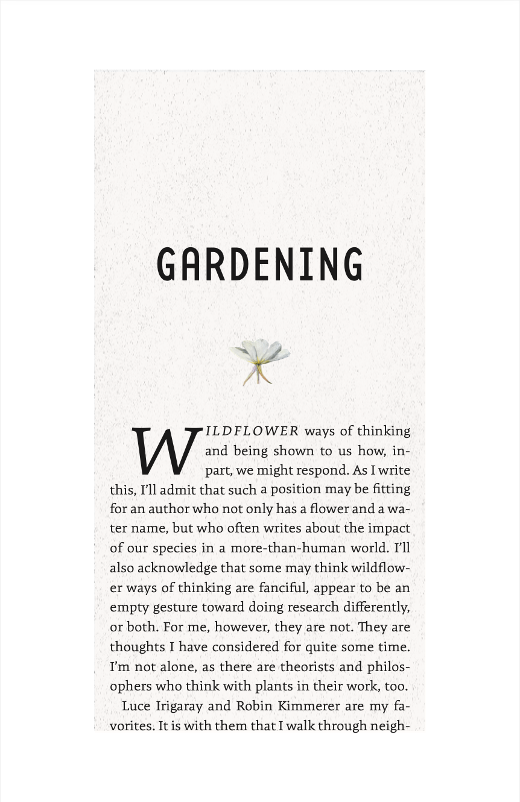
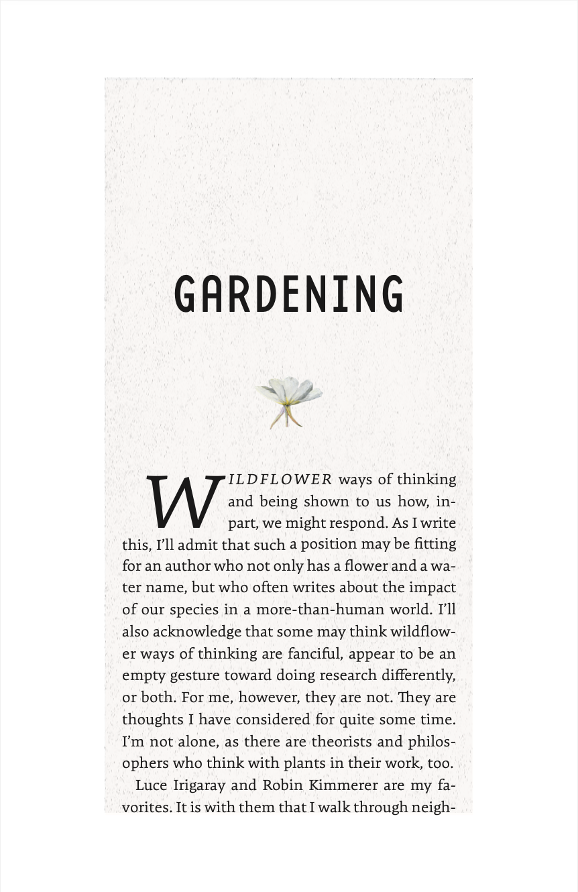

Book & Text Typography
In my book and text typography project centered around the world of gardening, my aim was to capture the inherent beauty and elegance that this subject exudes. Gardening is not merely a hobby; it's a form of art that connects us with nature's intricate designs. I wanted the typography to mirror this sentiment, to draw readers into a world of floral wonders and outdoor serenity.


For the title font, I carefully selected Base 12 Sans OT Regular. This font struck a perfect balance between weight and narrowness, lending a unique charm to the project. Its organic flow, characterized by the graceful counters and bowls, resonated beautifully with the theme of gardening. This choice was akin to selecting the right seed for a garden; it set the tone and expectations for what lay ahead.

To complement the title, I chose Expo Serif Pro Light for the body font. This font's thin yet wide design created a fascinating visual contrast with the title, enhancing the overall aesthetics of the text. It encouraged readers to explore further, enticing them with its intriguing spread across the page. Furthermore, I implemented paragraph styles such as indentation and drop caps to engage readers as they delved deeper into the text, ensuring their attention was held throughout the journey.
Incorporating illustrations of wildflowers was a natural choice, not only because they are directly related to the gardening theme but also because of their inherent grace. These visuals added depth and character to the overall design, reinforcing the connection between the text and the world of blooming beauty. In essence, this project was a testament to the artistry of gardening, where every word and design element was carefully cultivated to create a truly captivating experience for readers.